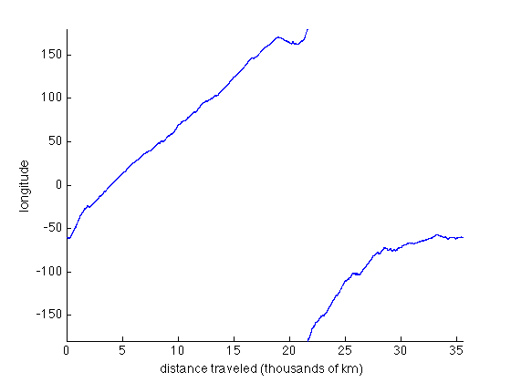
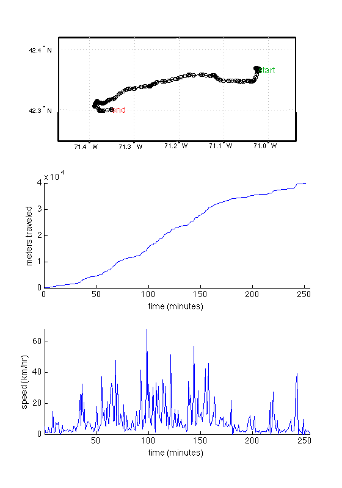
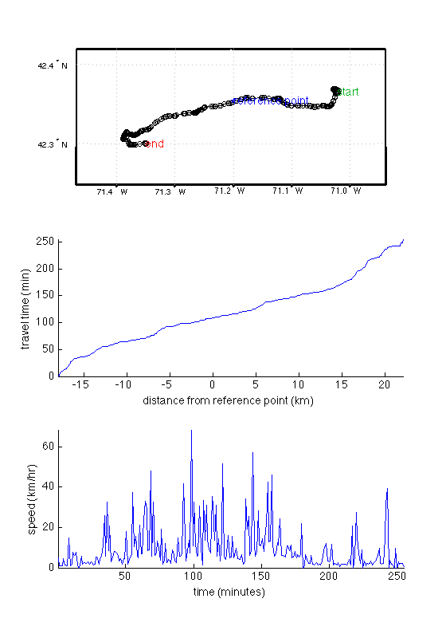

pathdist documentation
The pathdist function uses the distance function to calculate cumulative distance traveled along a path given by the arrays lat and lon. This may be useful when variables such as ice thickness or velocity as a function of distance traveled along a ship track, snowmobile path, flight line, or satellite track.
Requires Matlab's Mapping Toolbox. Always assumes WGS84 ellipsoid.
If your work pertains to Antarctica and you do not have a license for Matlab's Mapping Toolbox you can use pathdistps, which is produces very similar results to pathdist, although may be slightly less accurate due to inherent distortion in the polar stereographic projection.
Contents
Syntax
pathDistance = pathdist(lat,lon) pathDistance = pathdist(...,LengthUnit) pathDistance = pathdist(...,track) pathDistance = pathdist(...,'refpoint',[reflat reflon])
Description
pathDistance = pathdist(lat,lon) returns the cumulative distance traveled along the path given by (lat,|lon|). Distance is in meters by default, referenced to the WGS84 ellipsoid. The pathDistance array will be the same size as lat and lon.
pathDistance = pathdist(...,LengthUnit) specifies any valid length unit. The following are a few LengthUnit options. See documentation for validateLengthUnit for a complete list of options.
- meter 'm', 'meter(s)', 'metre(s)' (default)
- kilometer 'km', 'kilometer(s)', 'kilometre(s)'
- nautical mile 'nm', 'naut mi', 'nautical mile(s)'
- foot 'ft', 'international ft','foot', 'international foot', 'feet', 'international feet'
- yard 'yd', 'yds', 'yard(s)'
- mile 'mi', 'mile(s)','international mile(s)'
pathDistance = pathdist(...,track) uses the input string track to specify either a great circle/geodesic or a rhumb line arc. If track equals 'gc' (the default value), then great circle distances are computed on a sphere and geodesic distances are computed on the WGS84 ellipsoid. If track equals 'rh', then rhumb line distances are computed on the WGS84 ellipsoid.
pathDistance = pathdist(...,'refpoint',[reflat reflon]) references the path distance to the point along the path nearest to [reflat reflon]. For this calculation, pathdist finds the point in lat and lon which is nearest to [reflat reflon] and assumes this point along lat,|lon| is the zero point. This is only an approximation, and may give erroneous results in cases of very sharply-curving, crossing, or otherwise spaghetti-like paths; where [reflat reflon] lies far from any point along the path, or where points along the path are spaced far apart.
Example 1: How long is Antarctica's coast line?
For this example we'll use data from Mouginot et al. which we load with the antbounds_data function:
[lat,lon] = antbounds_data('coast'); DistanceAroundAntarctica = pathdist(lat,lon,'kilometers'); DistanceAroundAntarctica(end)
ans = 3.5491e+04
So a walk around Antarctica's coast line will take you on about a 35,000 kilometer trek. Let's see longitude as a function of distance traveled, if we go clockwise around the continent:
plot(DistanceAroundAntarctica/1000,lon,'b.') axis tight; box off; xlabel('distance traveled (thousands of km)') ylabel('longitude')
Example 2: Find distance traveled along a route marked by GPS measurements
This example uses the built-in sample_route.gpx route.
route = gpxread('sample_route.gpx'); % some sample data lat = route.Latitude; lon = route.Longitude; time = 0:255; % assume GPS measurements logged every minute % Create a map of the route: figure('position',[100 50 560 800]) subplot(3,1,1) usamap([min(lat)-.05 max(lat)+.05],[min(lon)-.08 max(lon)+.08]) plotm(lat,lon,'ko-') textm(lat(1),lon(1),'start','color',[.01 .7 .1]) textm(lat(end),lon(end),'end','color','r') % Plot distance traveled: metersTraveled = pathdist(lat,lon); subplot(3,1,2) plot(time,metersTraveled) box off; axis tight; xlabel('time (minutes)') ylabel('meters traveled') % Plot speed: speed = diff(metersTraveled/1000)./diff(time/60); subplot(3,1,3) plot(time(2:end)-.5,speed) box off; axis tight xlabel('time (minutes)') ylabel('speed (km/hr)')
Example 3: Calculate path length in meters referenced to a point
Adding to the plot above, we will define a reference point at (42.354 N, 71.2 W). Then we will look at travel time as a function of distance from the reference point.
reflat = 42.354; reflon = -71.2; subplot(3,1,1) plotm(reflat,reflon,'bp') textm(reflat,reflon,'reference point','color','b') kmFromRefPt = pathdist(lat,lon,'refpoint',[reflat reflon],'kilometers'); subplot(3,1,2) plot(kmFromRefPt,time) ylabel('travel time (min)') xlabel('distance from reference point (km)') axis tight; box off;
Citing AMT
If this function or any other part of Antarctic Mapping Tools is useful for you, please cite the paper that describes AMT.
Greene, C. A., Gwyther, D. E., & Blankenship, D. D. Antarctic Mapping Tools for Matlab. Computers & Geosciences. 104 (2017) pp.151-157. doi:10.1016/j.cageo.2016.08.003.
Author Info:
This function was written by Chad A. Greene of the Institute for Geophysics at the University of Texas at Austin (UTIG). June 23, 2014. Updated January 2015 to include support for more length units.